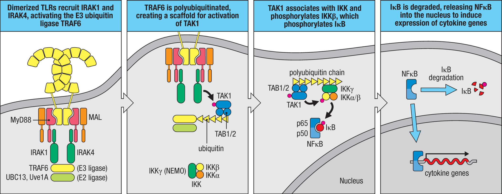
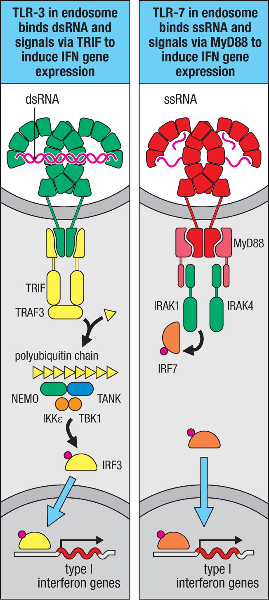
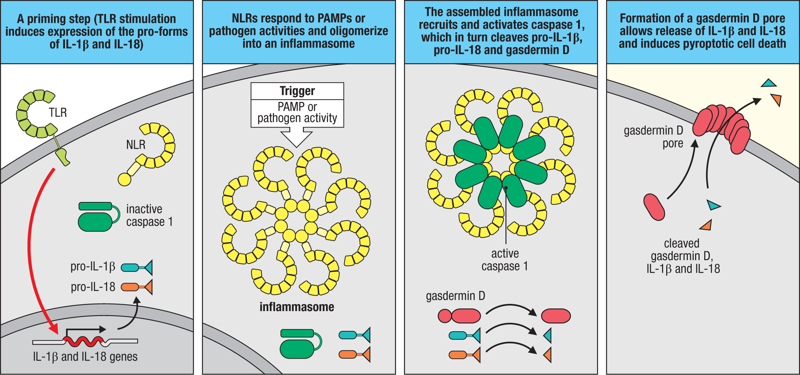

先天免疫訊號整合：從 TLR 到 Inflammasome 與 Interferon
出處：Kelly《Firestein & Kelley's Textbook of Rheumatology》Ch.95 Pathogenesis of Inflammasome-Mediated Diseases；Janeway《Immunobiology》10th ed Ch.3 Cellular Mechanisms of Innate Immunity（3-7～3-11 節，含 Fig. 3.14／3.15／3.20）。
本筆記為精華版，僅保留必背重點（🔴）。
0. 一句話看懂整章
先天免疫感應器（TLR 等）一被觸發，訊號就「分岔」：
- MyD88 → NF-κB：促發炎、抗細菌；同時是發炎體的「備料」步驟（priming）
- TRIF／MyD88 → IRF：第一型干擾素、抗病毒
- 另一條：危險訊號 → Inflammasome → caspase-1 → IL-1β/IL-18 ＋ 焦亡
危險訊號 → 感應器(Sensor) → ASC → caspase-1 → IL-1β / IL-18 ＋ pyroptosis(gasdermin-D)
讀任何細節，先問「這在哪條岔路？NF-κB？干擾素？還是發炎體？」就不會迷路。
1. TLR：受體、配體與「分岔」
1-1. 常考的 TLR–配體配對 🔴
| TLR | 配體 | 位置 |
|---|---|---|
| TLR-3 | 雙股 RNA（病毒） | endosome |
| TLR-4 | LPS（革蘭氏陰性菌） | 細胞膜＋endosome |
| TLR-5 | 鞭毛蛋白 flagellin | 細胞膜 |
| TLR-7/8 | 單股 RNA（病毒） | endosome |
| TLR-9 | 非甲基化 CpG DNA | endosome |
1-2. 活化後分岔（核心觀念）🔴
配體使兩個 TLR 的胞內 TIR 域靠攏 → 招募 adaptor，由 adaptor 決定走哪條岔路：
- MyD88：大部分 TLR 用 → 走 NF-κB
- TRIF：只有 TLR-3 用 → 走 IRF3
- TLR-4 兩條都走（膜上 MyD88、進 endosome 後 TRIF）
2. NF-κB 路線＝促發炎＋發炎體 priming

三個必記重點 🔴：
- 產物 = TNF-α、IL-1β、IL-6，並上調 NLRP3 → 這就是發炎體的 priming（signal 1）
- IκB 被磷酸化→降解，NF-κB 才能進核
-
臨床鉤子：
-
MyD88 缺乏／IRAK4 缺乏 → 反覆細菌感染的免疫缺陷
- NEMO（IKKγ）突變 → X-linked 外胚層發育不良＋免疫缺陷
3. IRF／干擾素路線＝抗病毒

3-1. 兩種產生第一型干擾素的走法 🔴
| 走法 | 路徑 | 主要細胞 |
|---|---|---|
| TLR-3（dsRNA） | TRIF → TBK1/IKKε → IRF3 | DC、巨噬細胞 |
| TLR-7/8/9（ssRNA/DNA） | MyD88 → IRAK1 → IRF7 | 漿細胞樣樹突細胞 pDC |
🔴 高產出考點：pDC 用 TLR-7/9 → IRF7 → 大量 IFN-α/β，正是 SLE「干擾素印記（interferon signature）」 的分子根源（自體核酸進 endosome 觸發）。
3-2. 不經 TLR 的胞質核酸感應器 🔴
- 胞質 RNA：RIG-I／MDA-5 → MAVS（粒線體）→ IRF3
- 胞質 DNA：cGAS → STING → TBK1 → IRF3
失調或 gain-of-function → SLE、Aicardi–Goutières 症候群、SAVI（STING 病）等第一型干擾素病。
4. Inflammasome 發炎體


4-1. 主軸與下游 🔴
Sensor → ASC → caspase-1 → 切 pro-IL-1β / pro-IL-18 / gasdermin-D
│
gasdermin-D N端插膜打洞 → IL-1β/IL-18 噴出 ＋ 焦亡(pyroptosis)
4-2. NLRP3：兩步驟活化（必考）🔴
- Signal 1（priming）＝
TLR → MyD88 → NF-κB（備料：pro-IL-1β、NLRP3）← 接第 2 部 - Signal 2（activation）＝ K⁺ 外流 ／ 粒線體 ROS ／ 結晶造成溶酶體破裂
4-3. 各 Inflammasome ↔ 疾病（速查）🔴
| 發炎體 | 感測什麼 | 對應疾病 | 主要細胞激素／治療 |
|---|---|---|---|
| NLRP3 | 結晶、冷、代謝危險訊號（K⁺外流） | CAPS（FCAS→MWS→NOMID）、痛風、假性痛風 | IL-1 阻斷 |
| Pyrin (MEFV) | actin 被細菌毒素破壞（RhoA 失活） | FMF、PAAND | colchicine→IL-1 |
| MVK | isoprenoid 缺乏 | HIDS／MKD | IL-1（常部分反應） |
| NLRC4 (+NAIP) | 細菌鞭毛蛋白／T3SS | 腸炎、反覆 MAS | IL-18 阻斷 ⭐對比點 |
| NLRP1 | 病原蛋白酶（如炭疽毒素） | NAIAD、皮膚角化 | IL-1 |
| AIM2 / IFI16 | 胞質 DNA | 乾癬、SLE | —（見第 5 部） |
5. 干擾素 ✕ 發炎體：交會點 🔴
- AIM2 活化第一步需要第一型干擾素；IFI16 ＝ IFN-inducible protein 16（干擾素誘導）。
- 串聯記憶：自體 DNA → 干擾素環境 → 誘導 AIM2/IFI16 → 發炎體 → SLE（SLE 可測 anti-AIM2／anti-IFI16）。
6. 治療 🔴
-
下游細胞激素阻斷（主流）：
-
IL-1 阻斷：anakinra、canakinumab、rilonacept（CAPS、FMF、TRAPS、HIDS）
- IL-18 阻斷：用於 NLRC4 型
- colchicine：FMF 第一線、痛風急性發作（機轉見下）
colchicine 作用機轉（Kelly Ch.97）
核心：結合 tubulin → 阻止微管（microtubule）聚合；下游抗發炎效果都是「微管壞掉」的連鎖反應：
- 破壞發炎體組裝：NLRP3／ASC／粒線體需沿微管聚合，微管被卡 → NLRP3 及 Pyrin 發炎體無法活化 → caspase-1 ↓ → IL-1β ↓（Pyrin 活化為微管依賴，故 colchicine 為 FMF 第一線）。
- 抑制嗜中性球趨化、黏附、移行 → 跑不進關節（痛風緩解）。
- 減少白三烯、細胞激素生成與吞噬作用。
藥理（高產出）：
- 治療指數窄，過量死亡率高。
- 經 CYP3A4 代謝、P-glycoprotein（P-gp） 排出 → 與 clarithromycin、protease inhibitors、cyclosporine、tacrolimus、statin 等併用會累積中毒。
- 肝／腎功能不良需減量；併用強 CYP3A4／P-gp 抑制劑為禁忌。
🎯 考前 30 秒速記
- TLR 一活化就分岔：MyD88→NF-κB（發炎／priming）｜ TRIF·MyD88→IRF→干擾素（抗病毒）；TLR-4 兩條都走。
- pDC：TLR-7/9→IRF7→IFN ＝ SLE 干擾素印記。
- 發炎體主軸：Sensor→ASC→caspase-1→IL-1β/IL-18＋焦亡。
- NLRP3 兩步驟：signal 1 priming(NF-κB 備料)｜signal 2(K⁺外流/ROS/溶酶體破裂 點火)。
- 疾病配對：NLRP3→CAPS/痛風｜Pyrin→FMF｜MVK→HIDS｜NLRC4→MAS(IL-18)｜AIM2/IFI16→SLE。
- 用藥：多靠 IL-1 阻斷；NLRC4 型靠 IL-18；FMF 用 colchicine。